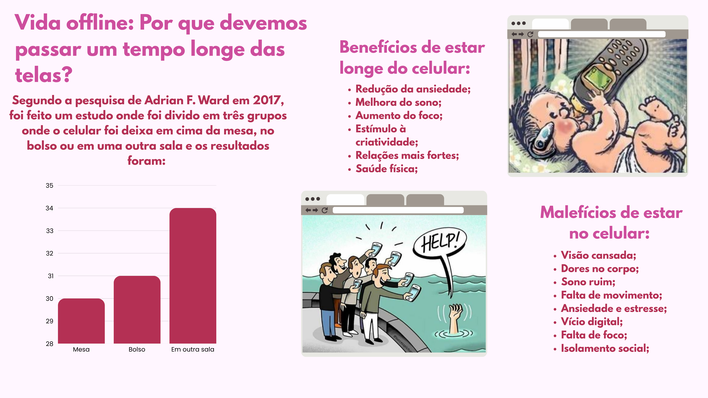

𝑴𝒊𝒏𝒉𝒂 𝒑𝒓𝒊𝒎𝒆𝒊𝒓𝒂 𝒇𝒐𝒇𝒐𝒄𝒂
Por: Ferreira e Grein
Brasil venceu o Catar por 3 a 1 na final da copa do mundo e conquistou seu sexto título mundial. Após uma partida emocionante, a seleção brasileira virou o jogo e garantiu mais um capítulo histórico.
se tá na choquei é verdade
Por: Ferreira e Grein
Brasil venceu o Catar por 3 a 1 na final da copa do mundo e conquistou seu sexto título mundial. Após uma partida emocionante, a seleção brasileira virou o jogo e garantiu mais um capítulo histórico.
Por: Ferreira e Grein
O mundo do esporte foi pego de surpresa. Em uma suposta coletiva de imprensa, o craque Neymar Junior teria anunciado que estaria rescindindo seu contrato atual no futebol para migrar para o automobilismo. De acordo com ele, estaria realizando um sonho de infancia relacionado a velocidade.

O avanço da tecnologia trouxe benefícios, como por exemplo:
Mas também trouxe malefícios, como:
